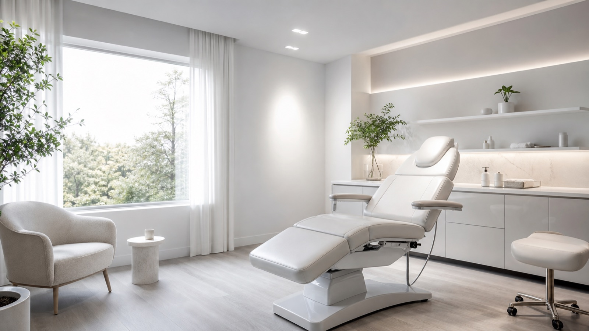
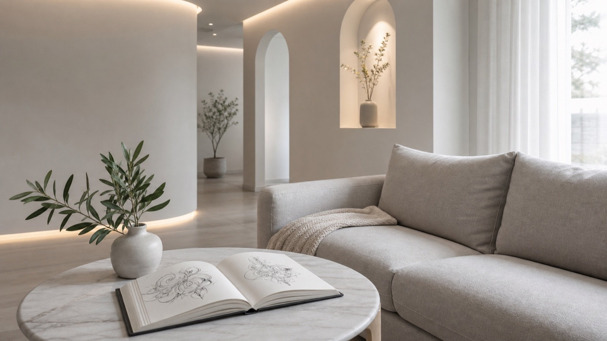

タトゥーの痛みは、部位でどれくらい変わるのか
「痛みが不安で踏み出せない」というご相談が一番多いので、部位ごとの目安と、当日つらくならないための過ごし方をまとめました。
「痛みが不安で踏み出せない」というご相談が一番多いので、部位ごとの目安と、当日つらくならないための過ごし方をまとめました。

針もインクもグローブもすべて使い捨て。再利用する器具をどう滅菌しているか、実際の工程を写真つきでご説明します。

「入れたいものが固まってから行くべき？」というご質問への答えと、カウンセリングで一緒に決めていく流れをご紹介します。

もちの長さ、仕上がり、ご予算。それぞれの違いを、実際にお選びいただいている基準からご説明します。

きれいに定着させるために、最初の1週間がいちばん大切です。やっていいこと・避けたいことを整理しました。

ほかのお客様と顔を合わせない完全予約制にしている理由と、店内でどんな時間を過ごしていただきたいかについて。
デザインが決まっていなくても大丈夫です。
施術中はお電話に出られないことがあるため、
メール・LINEでのご連絡がスムーズです。
営業時間／月〜金 10:00-18:00・土 10:00-15:00（日曜・祝日定休）